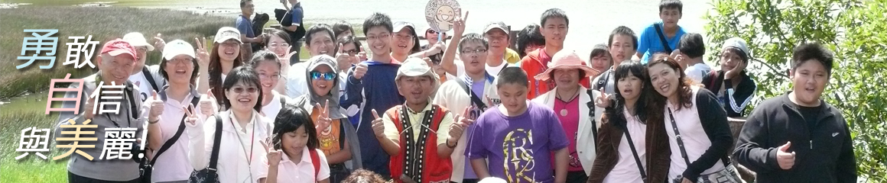

- 
理事長的話
你們看!多美的世界!用不一樣的角度，不一樣的態度。妳可以用不一樣的方式去靠近，去感受，過程或許有許多的障礙，但是你會看到那個美麗，那個不一樣的世界。在人的生命中，上帝會給你一個帶硬殼像核桃般的果實，祂不會幫你打開，你自己要去打開它。
天啊！糖尿病，一輩子的病！相信是無助的，想到未來，問題就一個接著一個浮現腦海，未來就這樣改變了嗎?我們充滿了不安與焦慮，真不知如何面對。我們要冷靜去思考，不論我們願不願意接受，快樂是一天，難過也是一天，我們應該要選擇快樂。
糖尿病改變了我們的家庭，改變了我們的生活，有時候我們不需要物質的需求，因為知道靠物質支撐的快樂，都會隨著物質的離去而離去。心靈的成長才是快樂真正的來源。幼年孩子未來的成長，決定在於父母。孩子的健康牽動著整個家庭的生活，我們不可能陪伴孩子一輩子。我們要珍惜去陪伴孩子一起成長，共同面對困難，面對未來，因為在最艱困得環境中，蘊含著最美麗的價值。
上帝給我們一個特別的孩子，就是要我們做一個特別的爸爸媽媽。我希望我的孩子，我希望所有的孩子，要活的健康也要活的精采，去享受生活，去享受未來，去圓自己的夢想、去寫自己的故事，只要勇敢與自信你會看到你的美麗。